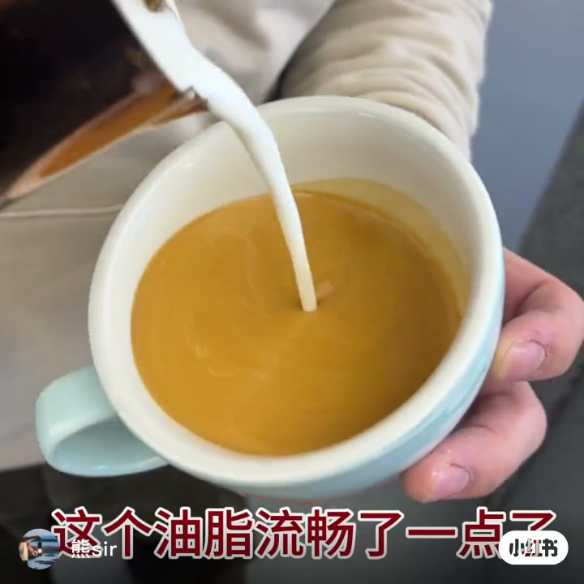
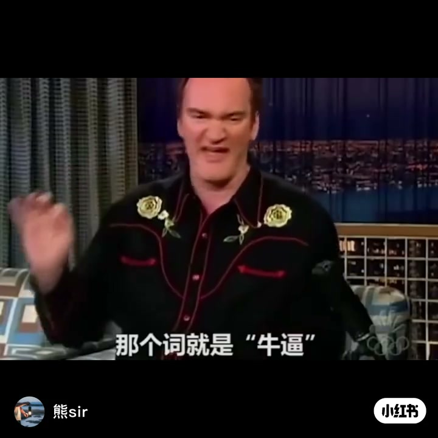
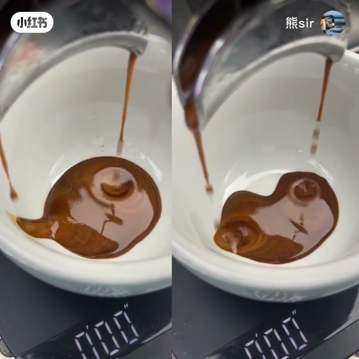
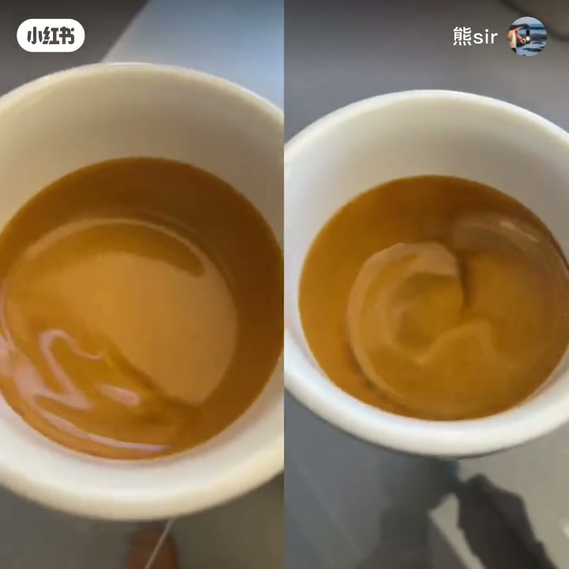
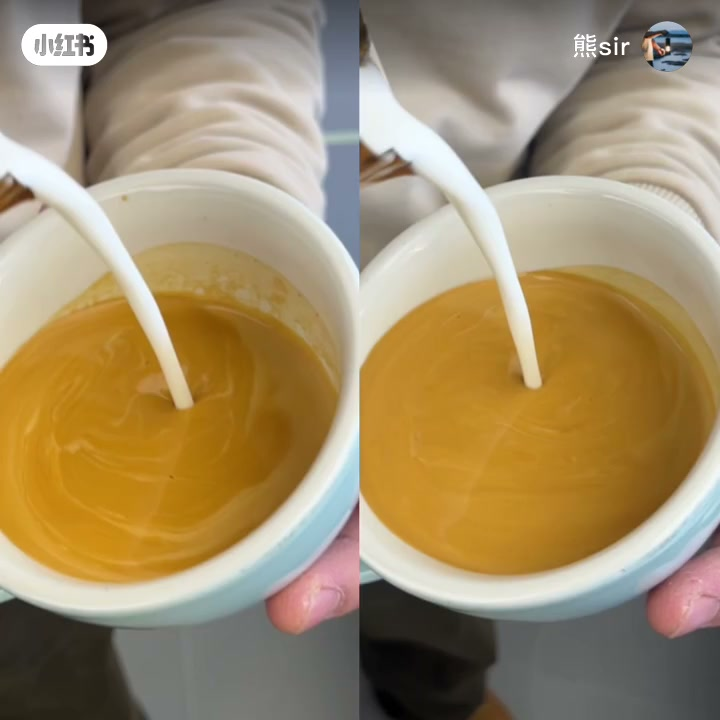
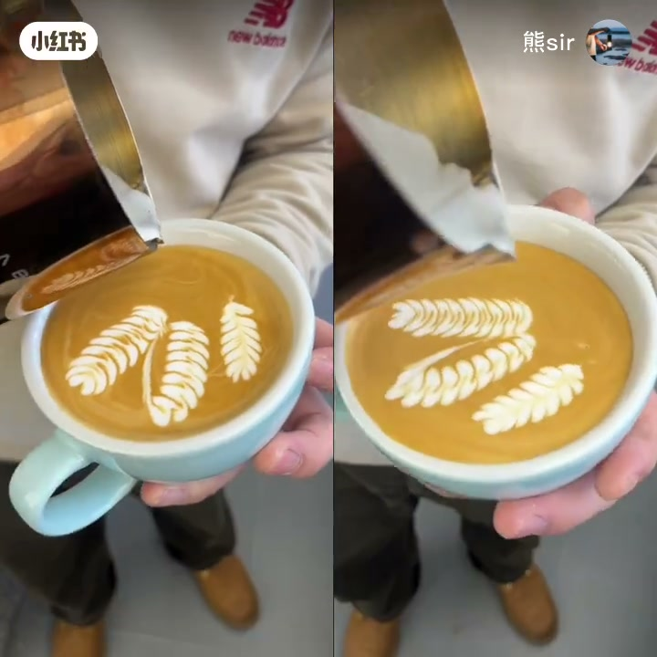

内容要点
这是一支对照实验短片：同一套拉花语境下，比较两杯研磨略有差异的浓缩，观察「看起来更浓」的那杯是否真的更适合画花。
知识结构
先从倒奶时的油脂流畅感切入，再用表情包点题：浓缩调不好，拉花就难搞。
初始阶段两杯状态接近；左杯研磨比右杯细一点。摇晃后左杯更黏稠、物质感更多——观众容易以为这杯更适合拉花。
即使搅拌融合，左杯表面油脂泡沫仍不均匀；摆动脉冲时右杯液面更有弹性、线条更圆润灵动，液面也更干净。
浓缩不一定越黏稠越浓越好；下期再讲「更上一层楼」的技巧，并展示最终对比效果。
用拉花结果倒推浓缩：融合是否均匀、脉冲时液面是否有弹性与干净度，比「摇起来更黏」更能说明哪杯好用。
00:00-00:07开场：油脂手感与命题
画面一开始就是俯视倒奶：奶流切入杯中油脂层，作者随口评价「这个油脂流畅了一点了」。紧接着插入塔伦蒂诺表情包（字幕里还有一句「你有病」的玩笑口吻），把主题钉死——
视频未交代完整配方参数（粉量、液重、水温等），开场只建立观看契约：后面要用对照实验证明，基底浓缩会直接拖累拉花表现。


00:07-00:22双杯浓缩：初看接近，摇晃见黏稠差
进入正题：左右分屏同时观察两杯浓缩萃取。作者说「在初始阶段状态看起来很接近」，但立刻给出变量——
细差没有给出精确刻度，属于视频留白。关键操作是「摇晃一下浓缩」：左杯质地更黏稠、物质感更多。到这里观众的直觉往往会站左杯——看起来更浓、更有料。
作者立刻追问：「哪杯更适合拉花呢？」把判断标准从「感官黏稠」切到「后续可用性」。


00:22-00:47融合与拉花：右杯液面更干净有弹性
检验从「奶咖融合」开始。作者指出：即使搅拌融合也没用，左杯油脂泡沫在表面的分布很不均匀；「右边明显要好于左边」。也就是说，更黏稠的浓缩并没有带来更干净的画布。
接着进入线条呈现。作者说到摆动脉冲阶段（Whisper 记作「脉碎」，按拉花语境校正为脉冲/摆叶动作）：右杯液面更有弹性，脉冲更圆润灵动，液面干净度也明显提升。
说明：视频是作者观点与现场演示；未给出可复现的研磨刻度差值，也未做盲测。结论应理解为「在本对照中，更黏稠的左杯拉花表现更差」，而非一切细研磨都必然失败。


00:47-00:58结论：越黏稠不一定越好
收束句把直觉翻过来：
作者预告下一期会在此基础上讲「更上一层楼」的技巧，并让观众看最终对比效果；以「下期见」结束。本集证据链停在：黏稠感 ≠ 拉花友好；融合均匀度与脉冲时的液面弹性/干净度，才是更贴近实操的验收信号。
详细文字转录（25段）
以下内容按 Whisper 原始分段完整呈现，可能包含识别误差（如「脉碎」宜按语境理解为脉冲；结尾「下期间」为口误/重复）。
-
嗯,这个油脂流畅了一点了
-
你有病
-
浓缩调不好,拉花就难搞
-
先来观察两杯浓缩的萃取
-
在初始阶段状态看起来很接近
-
研磨度左边比右边细一点
-
细多少大家可以猜一下
-
摇晃一下浓缩
-
可以看到左边这杯要比右边
-
质地更粘稠,物质感更多
-
哪杯更适合拉花呢
-
先从融合的过程可以看到
-
即使搅拌融合也没用
-
油脂泡沫在表面的分布很不均匀
-
右边明显要好于左边
-
对于线条的呈现也会有明显的区别
-
可以看到在摆动脉碎时
-
右边比左边的液面会更有弹性
-
脉碎更加的圆润灵动
-
液面的干净度也会有明显的提升
-
所以浓缩不一定是越粘稠越浓越好哦
-
下一期我们来讲在此基础上
-
更上一层楼的技巧
-
来看一下最终的对比效果下期间
-
下期见